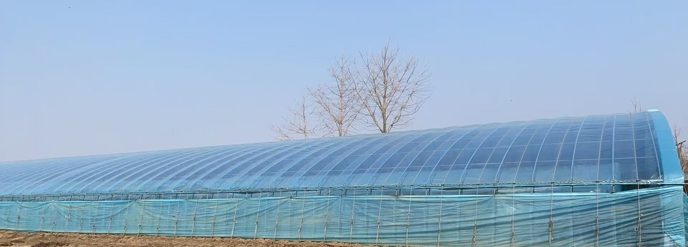

Farm Gallery | 农场图片

Greenhouse Cultivation | 温室种植

Seedlings1 | 育苗1

Seedlings2 | 育苗2
From Seed Selection to Fresh Market Supply
从种子选择到市场供应的一体化农业
Taizi Island Heritage Farm is a family agricultural business specializing in tomato and cucumber production. We manage the full agricultural process from seed selection and greenhouse cultivation to harvesting and market distribution.
太子岛老农民农场是一家家庭农业企业，专注于番茄和黄瓜种植。 我们管理完整的农业流程，包括种子选择、温室种植、收获以及市场销售与分销。
Fresh, high-quality tomatoes grown through careful seed selection and greenhouse management.
通过严格种子选择和温室管理种植的新鲜高品质番茄。
Harvest Season | 采收季节: June – November | 每年6–11月
Crisp cucumbers cultivated using sustainable farming techniques.
采用可持续农业技术种植的优质黄瓜。
Harvest Season | 采收季节: June – November | 每年6–11月

Greenhouse Cultivation | 温室种植
Seedlings1 | 育苗1
Seedlings2 | 育苗2
Location: Liaoyang, Liaoning, China
辽宁省辽阳市太子岛农林牧渔基地
Contact Person: Xiuce Gu
Email: mgu.joy@gmail.com
Phone: +86 158 4191 8476
We welcome wholesalers and partners worldwide.
欢迎国内外批发商与合作伙伴。
Contact Now